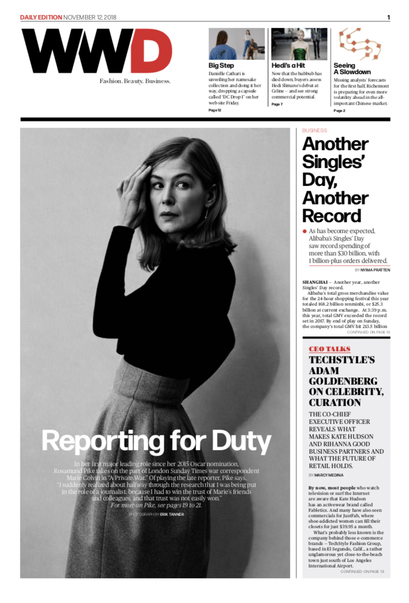

Women's Wear Daily
Selected profiles:
Art
Up Close With JR at the Brooklyn Museum
Austin Lee Mounts Solo Exhibition ‘Feels Good’ at Jeffrey Deitch
Farah Atassi’s New Paintings Take Shape at Almine Rech
Bharti Kher Explores ‘The Unexpected Freedom of Chaos’ at Perrotin Gallery
Film
Rosamund Pike and the Stakes of Truthful Reporting
Winston Duke is One of 'Us'
Dave Franco on "The Disaster Artist"
Taylor Kitsch, Inside the Mind of David Koresh
Darren Criss, Eyeing an Emmy
Theater & Dance
Alvin Ailey and the Enduring Power of Dance
Ballerina Diana Vishneva Sets Sights on Next Stage
‘Diana’ Costume Designer William Ivey Long Lends a 2020 Touch to Princess Diana
Parties
Adam Sandler Has a Cool Night at Cipriani
Art Basel Miami Beach 2019: Marilyn Minter and Jerry Saltz Host a Dinner and Convo With Playboy
Art Basel Miami Beach 2019: Museum of Graffiti Opens in Wynwood
Jonas Brothers Woo the American Museum of Natural History Gala Crowd
Prada Resort 2019 After Party
Food & Dining
All WWD articles
Chef Alfred Portale Strikes Out on His Own With Namesake Restaurant
Beatrice Inn Chef Angie Mar Lays It All Out in Her First Cookbook, ‘Butcher + Beast’
Aldo Sohm’s Wine Knowledge Is for the Masses
Ernesto’s Bringing Basque Cuisine to the Lower East Side